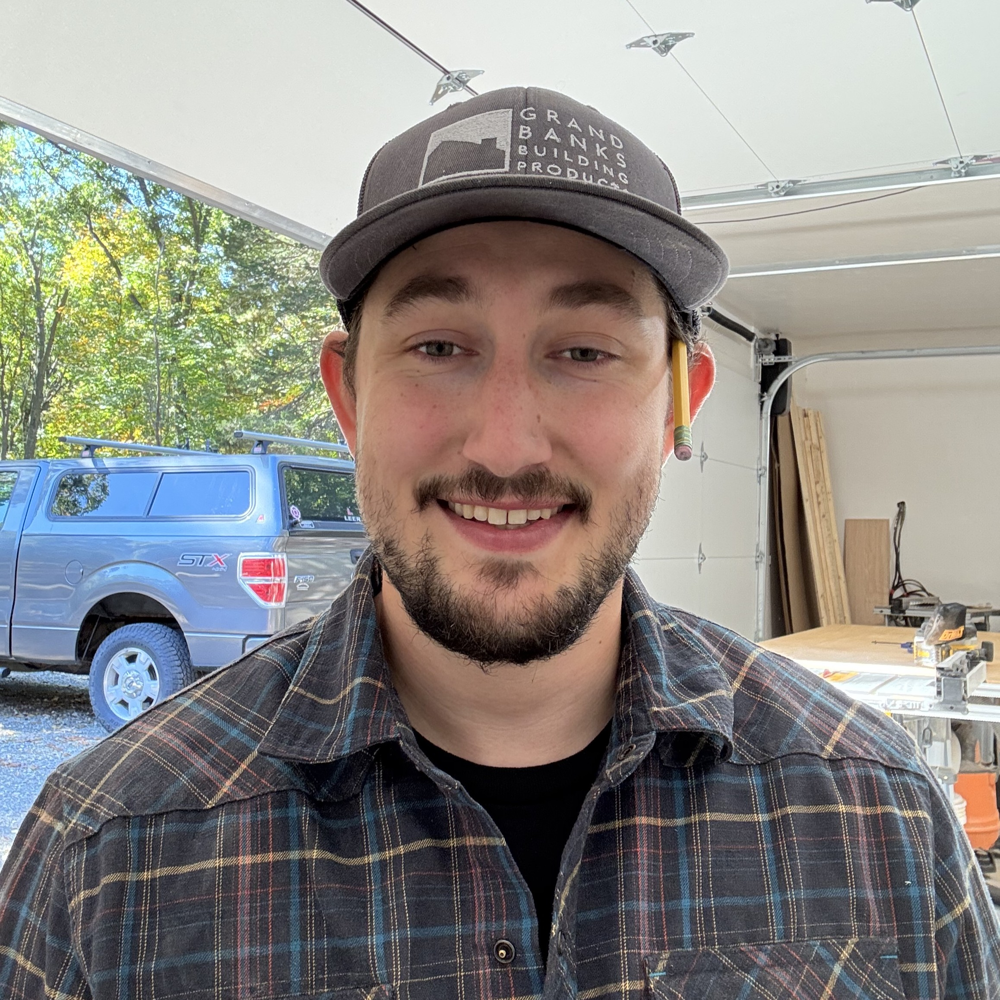

About
Craftsmanship grounded in design, engineering, and execution.
A mechanical engineer turned carpenter, focused on building work that balances thoughtful design with precise execution.
Background
I started my career studying mechanical engineering, where I developed a strong foundation in problem solving, design, and understanding how systems come together. Over time, that interest shifted toward building and working with materials more directly, which led me into carpentry.
That transition brought together two perspectives: the analytical mindset of engineering and the hands-on demands of construction. The result is an approach to work that values both planning and execution equally.
Approach
My focus is on clean, well-executed work that holds up both structurally and visually. Whether the project is furniture, shelving, or finish carpentry, the goal is the same: strong proportions, thoughtful material selection, and precise execution.
I approach each build with attention to detail and a willingness to refine the design when necessary. That often means working through multiple iterations to arrive at a solution that feels intentional rather than forced.
Work
My experience includes custom furniture, shelving, and finish carpentry across a range of applications. I am particularly interested in projects that combine design thinking with hands-on execution, where both the process and the final result matter.
The work shown throughout this site reflects that approach: a balance of planning, material awareness, and careful construction.